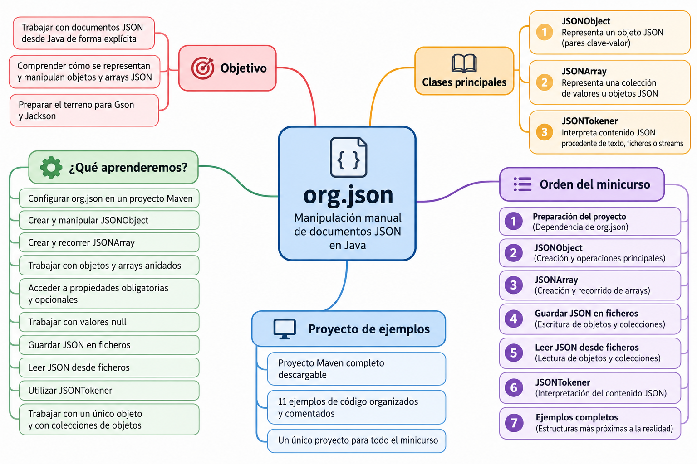

org.json¶
Introducción¶
org.json es una librería que permite trabajar con documentos JSON desde Java de forma explícita y manual.
A diferencia de otras librerías como Gson o Jackson, con org.json construiremos y recorreremos nosotros mismos la estructura del documento JSON utilizando principalmente tres clases:
JSONObjectJSONArrayJSONTokener
Esto nos permitirá comprender cómo se representan y manipulan los objetos y arrays JSON antes de utilizar mecanismos de conversión automática entre objetos Java y JSON.
¿Por qué empezamos por org.json?
Con org.json trabajaremos directamente con la estructura del documento JSON.
Tendremos que crear los objetos y arrays, añadir sus datos, acceder a sus propiedades y recorrer sus elementos.
Esta forma de trabajar nos ayudará a comprender mejor JSON antes de estudiar Gson y Jackson, donde veremos mecanismos más automáticos de conversión entre objetos Java y JSON.
Mapa del minicurso¶
El siguiente mapa resume los principales conceptos que estudiaremos con org.json, las clases fundamentales y el recorrido que seguiremos durante el minicurso.

¿Qué aprenderemos?¶
En este minicurso aprenderemos a:
- configurar la librería
org.jsonen un proyecto Maven; - localizar e incorporar su dependencia;
- crear y manipular objetos JSON mediante
JSONObject; - crear y recorrer arrays JSON mediante
JSONArray; - trabajar con objetos y arrays anidados;
- acceder a propiedades obligatorias y opcionales;
- trabajar con valores
null; - recorrer estructuras JSON;
- convertir objetos y arrays JSON a texto;
- guardar documentos JSON en ficheros;
- leer documentos JSON desde ficheros;
- utilizar
JSONTokenerdurante la lectura; - trabajar con documentos formados por un único objeto y con colecciones de objetos.
Proyecto Maven de ejemplos¶
Durante todo el minicurso utilizaremos un proyecto Maven completo con los ejemplos de código de la librería org.json.
📦 Descargar proyecto Maven completo de org.json
El proyecto está preparado para trabajar con Java 21 y contiene todos los ejemplos que iremos utilizando a lo largo de los distintos apartados.
Orden recomendado de los ejemplos¶
| Orden | Ejemplo | Contenido principal |
|---|---|---|
| 1 | DemoOrgJson.java |
Primera toma de contacto con org.json y creación de un JSONObject sencillo. |
| 2 | DemoJSONObject.java |
Tipos de datos, put(), recuperación y modificación de valores y toString(4). |
| 3 | JSONObjectOpcionales.java |
Uso de opt...(), has(), isNull() y JSONObject.NULL. |
| 4 | JSONObjectAnidado.java |
Creación y acceso a objetos JSONObject anidados. |
| 5 | RecorrerJSONObject.java |
Recorrido de las propiedades mediante keySet() y recuperación mediante get(). |
| 6 | DemoJSONArray.java |
Creación, acceso, modificación, eliminación y recorrido de un JSONArray. |
| 7 | JSONArrayAnidado.java |
Combinación de JSONObject y JSONArray en estructuras JSON de varios niveles. |
| 8 | GuardarJSONv1.java |
Escritura de un JSONObject en data/persona.json. |
| 9 | LeerJSONv1.java |
Lectura de persona.json mediante FileReader, JSONTokener y JSONObject. |
| 10 | GuardarJSONv2.java |
Escritura de un JSONArray de objetos en data/personas.json. |
| 11 | LeerJSONv2.java |
Lectura con BufferedReader, JSONTokener, nextValue() y tratamiento de JSONObject/JSONArray. |
Cómo utilizar el proyecto
Descarga y descomprime el fichero ZIP.
Abre la carpeta como proyecto Maven en tu entorno de desarrollo y comprueba que estás trabajando con JDK 21.
Ejecuta los ejemplos siguiendo el orden indicado en la tabla.
El fichero README.md incluido en el proyecto contiene también el orden recomendado y una descripción de cada ejemplo.
Un único proyecto para todo el minicurso
No es necesario crear un proyecto diferente para cada ejemplo.
Todos los programas de esta sección utilizan la misma dependencia de org.json y están incluidos en el mismo proyecto Maven.
En cada apartado indicaremos qué clases del proyecto corresponden a los conceptos estudiados.
Contenidos del minicurso¶
Seguiremos el siguiente recorrido:
Preparación del proyecto
│
▼
JSONObject
│
▼
JSONArray
│
▼
Guardar JSON
│
▼
Leer JSON
│
▼
JSONTokener
│
▼
Estructuras completas
1. Preparación del proyecto¶
Configuraremos el proyecto Maven y añadiremos la dependencia de org.json.
También veremos de dónde obtiene Maven las librerías y cómo localizar una dependencia.
2. JSONObject¶
Aprenderemos a representar objetos JSON mediante JSONObject.
Veremos, entre otras operaciones:
put()getString()getInt()getDouble()getBoolean()opt...()has()isNull()remove()keySet()toString()
También trabajaremos con objetos anidados y estructuras más completas.
Los ejemplos principales del proyecto para este apartado son:
DemoOrgJson.java
DemoJSONObject.java
JSONObjectOpcionales.java
JSONObjectAnidado.java
RecorrerJSONObject.java
3. JSONArray¶
Utilizaremos JSONArray para representar colecciones de valores y objetos.
Aprenderemos a:
- crear arrays;
- añadir elementos mediante
put(); - acceder a sus posiciones;
- recuperar valores;
- modificar elementos;
- eliminar elementos;
- recorrer arrays;
- almacenar objetos
JSONObjectdentro de un array; - combinar arrays y objetos en varios niveles.
Los ejemplos principales son:
DemoJSONArray.java
JSONArrayAnidado.java
4. Guardar JSON en ficheros¶
Construiremos documentos JSON en memoria y posteriormente los almacenaremos en ficheros.
Trabajaremos tanto con:
- un único
JSONObject; - un
JSONArrayque contiene varios objetos.
El proceso general será:
JSONObject / JSONArray
│
│ toString(4)
▼
String
│
│ FileWriter
▼
fichero .json
Los ejemplos correspondientes son:
GuardarJSONv1.java
GuardarJSONv2.java
5. Leer JSON desde ficheros¶
Realizaremos el proceso inverso: recuperaremos documentos JSON almacenados en ficheros y accederemos a la información que contienen.
El proceso general será:
fichero .json
│
▼
FileReader / BufferedReader
│
▼
JSONTokener
│
▼
JSONObject / JSONArray
│
▼
get...() / opt...()
│
▼
datos Java
Los ejemplos correspondientes son:
LeerJSONv1.java
LeerJSONv2.java
6. JSONTokener¶
Durante la lectura utilizaremos JSONTokener para interpretar el contenido JSON procedente de un fichero o stream.
Podremos utilizarlo directamente para construir una estructura conocida:
JSONTokener tokener = new JSONTokener(reader);
JSONObject objeto = new JSONObject(tokener);
o utilizar:
Object contenido = tokener.nextValue();
para comprobar posteriormente qué estructura hemos obtenido:
if (contenido instanceof JSONObject objeto) {
// Procesar JSONObject
} else if (contenido instanceof JSONArray array) {
// Procesar JSONArray
}
JSONTokener y la lectura
JSONTokener aparecerá fundamentalmente cuando leamos documentos JSON.
Para construir un documento JSON en memoria utilizaremos principalmente JSONObject y JSONArray.
7. Estructuras completas¶
Finalmente combinaremos los conceptos anteriores para trabajar con estructuras JSON más próximas a las que podemos encontrar en aplicaciones reales.
Por ejemplo:
{
"grupo": "2DAM",
"alumnos": [
{
"id": 1,
"nombre": "Ana",
"modulos": [
"Acceso a Datos",
"Desarrollo de Interfaces"
]
},
{
"id": 2,
"nombre": "Luis",
"modulos": [
"Acceso a Datos",
"Programación de Servicios"
]
}
]
}
En este tipo de documento aparecen combinados:
JSONObject
│
└── JSONArray
│
├── JSONObject
│ │
│ └── JSONArray
│
└── JSONObject
│
└── JSONArray
Clases principales¶
| Clase | Utilidad |
|---|---|
JSONObject |
Representa un objeto JSON formado por pares clave-valor. |
JSONArray |
Representa una colección de valores u objetos JSON. |
JSONTokener |
Interpreta contenido JSON procedente de texto, ficheros o streams. |
Podemos resumir la relación entre ellas de esta forma:
org.json
│
┌────────────┼────────────┐
│ │ │
▼ ▼ ▼
JSONObject JSONArray JSONTokener
│ │ │
│ │ │
objetos colecciones lectura
│ │ de JSON
└──────┬─────┘
│
▼
Documento JSON
Flujo completo de trabajo¶
Al terminar este minicurso debemos ser capaces de comprender todo el ciclo:
CREACIÓN
│
▼
JSONObject
JSONArray
│
│ put()
▼
ESTRUCTURA JSON
│
│ toString(4)
▼
FileWriter
│
▼
┌─────────────┐
│ FICHERO JSON│
└─────────────┘
│
▼
FileReader / BufferedReader
│
▼
JSONTokener
│
▼
JSONObject / JSONArray
│
│ get...() / opt...()
▼
DATOS JAVA
Objetivo del minicurso
Al finalizar org.json deberemos ser capaces de crear, modificar, recorrer, guardar y leer estructuras JSON desde Java.
Además, comprenderemos la estructura del documento JSON antes de pasar a librerías como Gson y Jackson, que automatizan parte de este trabajo.